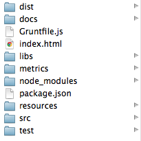
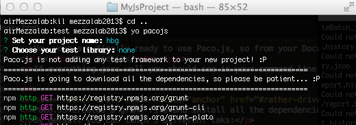

Paco.js the Yeoman generator for any Javascript developer
Paco.js is a Yeoman generator for any full stack Javascript developer that is looking for a quick way to start a Javascript projects but with all the useful tools and metrics immediately ready to be used.
Paco.js integrate the different tools that will allow you to improve your code and keep an eye on potential bottlenecks or possible mistakes in any part of your code.
It's an agnostic framework generator that means any tool inside Paco.js are useful for any Javascript project you are currently working on from server side with Node.js to client side like games, applications or mobile apps with any framework (AngularJS, Meteor, Famous and so on).
Paco.js includes:
- Bower: a package manager for the web
- Plato: static analysis tool
- Mocha or Jasmine: TDD, BDD, Unit Testing library (potentially you can also choose to not add any of these libraries)
- Grunt: tasks runner
- Watch Grunt plugin: plug-in that allows to refresh your main html page every time you change any file inside the source folder or compile your SASS files in CSS automatically.
- JSHint: code quality tool
- JSDocs: documentation generator tool
- JSSemicoloned: simple task that add the missing semicolons at the end of each statement
Last but not least it will create the folder structure of your project in a standard and well define way as you can see in the image below and it will install all the dependencies described above
This is particular useful when you want to keep consistency between your projects.
Requirements to use Paco.js
In order to use Paco.js you need install in your computer Node.js, NPM and Yeoman.
I suggest also to export the local path of your project directory in order to work with local executables instead of only global ones; so open your command line and type
$ export PATH="./node_modules/.bin:$PATH"Install Paco.js generator
Installing Paco.js is very easy, from your command line interface type:
$ npm install pacojsOr if you want to install the generator globally type:
$ npm install -g pacojsExecute Paco.js
Now your are finally ready to use Paco.js, so from your Documents folder or where you usually store all your projects type:
$ yo pacojsIf everything goes well you should see in your command line interface something similar to this:
Default Tasks in Paco.js
Paco.JS creates a grunt file and install all the dependencies for you so from now on you have only to focus on your Javascript project.
By default you can lunch 3 different taks:
- default: where all the tools are run simultaneously; in this case, the watch plugin will be activated so every time you change a file in your source or test folder automatically will be refresh the browser page where you are rendering your project.
- analysis: in this case Grunt will run only the jshint and plato tasks checking the code for you and generating the static analysis inside the metrics folder
- docs: in this case Grunt will run only the jsdoc task generating the documentation from the comments inside your project
To use 1 if these registered task you need to call Grunt inside the project folder like:
$ grunt$ grunt analysis$ grunt docsIf, during the project generation, you've chosen also Mocha or Jasmine you can also run only the tests and the jshint task in this way:
$ grunt testsPaco.js mentions
Paco.js: The definitive Javascript project generator
Support or Contact
Having trouble with Paco.js? Do you want to share your feedback on the project? Do you want to suggest a new library, a new feature or add an useful tool to speed up the life of the Javascript developers? Drop me a line and remember to follow me to read more about Paco.js
BLOG: lucamezzalira.com
TWITTER: @lucamezzalira
LINKEDIN: luca mezzalira